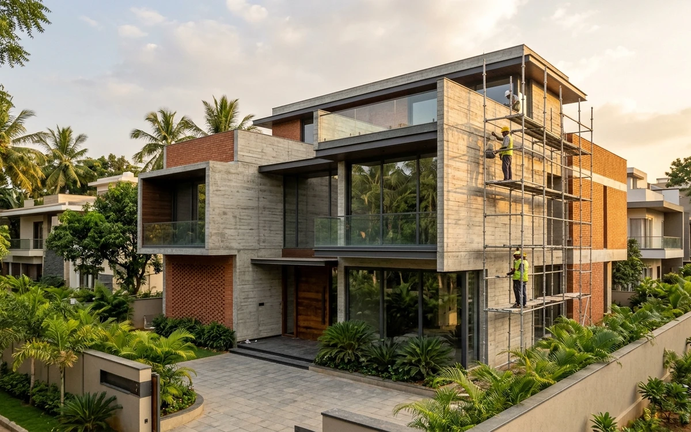

New house construction
Complete structural construction from foundation excavation and RCC slab work to masonry, plumbing, electrical, and fine finishing.
Construction & Renovation
A home begins long before the first brick. From architectural planning and municipal approvals to turnkey house construction, quality renovations, and composite loan coordination in Trichy, we help bring your dream home to life.

More possibilities.
100+ banking relationships.
Whether starting from an empty plot or upgrading the home you cherish, we provide dedicated craftsmanship and clear communication.
Complete structural construction from foundation excavation and RCC slab work to masonry, plumbing, electrical, and fine finishing.
Room additions, vertical second-floor extensions, kitchen remodeling, bathroom upgrades, and structural waterproofing.
2D floor plans, 3D elevations, structural stability estimations, and local municipal corporation / panchayat permit coordination.
End-to-end material sourcing, vetted engineering supervision, milestone-based stage billing, and construction loan drawdown support.
Greenvill undertakes residential building projects across Trichy and surrounding regions. All contracts feature milestone-based payments and transparent material specifications.
Our commitment to structural durability, material integrity, and stress-free project execution.
A dependable, well-supervised building journey from the first survey to the day you receive the keys.
We inspect your plot, discuss orientation, ventilation, family lifestyle, and establish a realistic budget.
Detailed floor plans, architectural elevation, Vastu alignment if desired, and transparent stage-wise budget estimates.
Corporation / Panchayat approval documentation, site clearance, soil testing, and prime material procurement.
Supervised construction through every milestone, finishing checklist, and on-time handover of your keys.
Have specific requirements in mind?
We’re a phone call away.
Yes. One of our greatest advantages is managing both under one roof. We prepare approved construction estimates, blueprints, and stage-completion certificates that directly comply with bank disbursement requirements.
Yes. We build independent homes, duplex villas, and bungalows on client plots across Tiruchirappalli, Srirangam, K.K. Nagar, Thillai Nagar, Mela Chintamani, and neighboring locales.
Payments are strictly milestone-based (e.g., foundation, lintel, roof slab, brickwork, plastering, flooring, and final handover). You only pay as tangible construction milestones are completed.
Yes. We inspect existing structural integrity, assess column and foundation load capacity, and execute vertical additions, modernization, and interior renovations seamlessly.
Monday – Saturday
9:00 AM – 7:00 PM